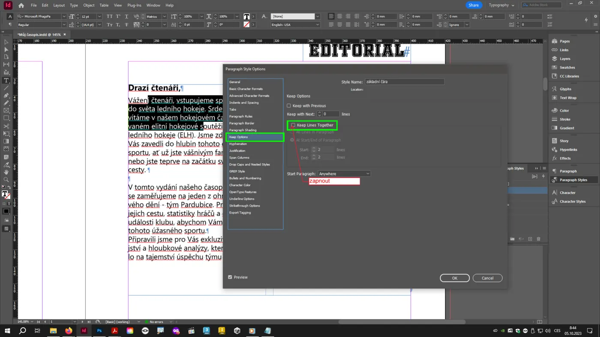
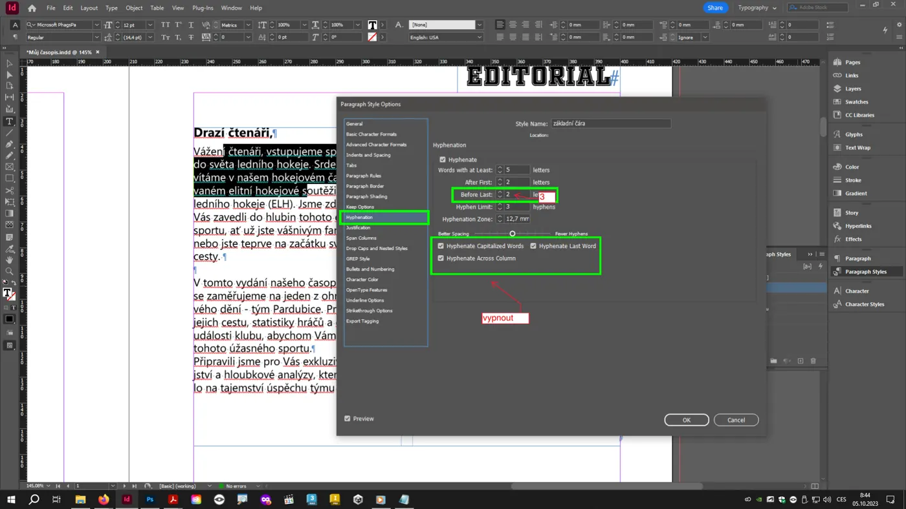
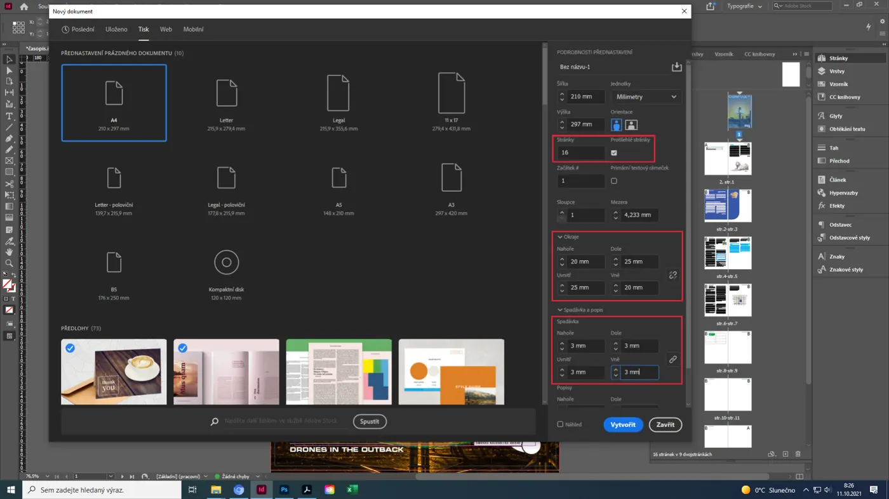
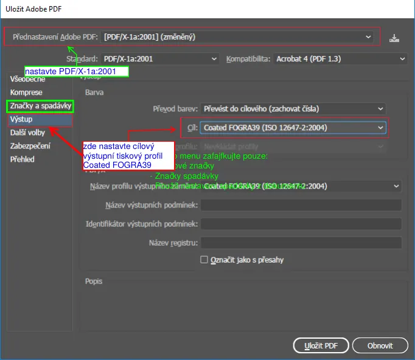

Maturitní otázka 4· InDesign a typografie
InDesign – odstavcové styly, vzorové stránky, obsah
Tohle je zmenšené periodikum: několik stran A4, text nalitý do provázaných rámečků ve dvou sloupcích, nejméně tři odstavcové styly, z jednoho z nich vygenerovaný obsah s vodicími znaky, vzorová stránka s automatickým číslováním, obrázek s obtékáním, typografické a gramatické opravy a export do PDF/X. V teorii: parametry odstavcových stylů, princip vzorových stránek a instance výplně a tahu na rámečcích a textu.
- InDesignvícestránkový dokument A4
- Podkladytextový soubor + obrázek v maturitním PC
- VýstupPDF/X s výstupním profilem
- Teoriestyly, vzorové stránky, výplň a tah
Praktická část Co se obvykle chce
- Vícestránkový dokument A4 (typicky 8 stran) z připraveného textového souboru.
- Provázaná textová pole s dvousloupcovou sazbou.
- Alespoň tři odstavcové styly (nadpis, podnadpis, základní text) a z jednoho z nich vygenerovaný obsah s vlastním stylem a vodicími znaky (tečkami k číslu stránky).
- Vzorová stránka s automatickým číslem stránky.
- Obrázek s obtékáním textu; typografické a gramatické opravy (TypoSkript, Hledat a nahradit, kontrola pravopisu).
- Export do PDF/X s vhodným výstupním profilem (Coated FOGRA39).
Teoretická část Co musíš umět vysvětlit
- Parametry odstavcových stylů – k čemu slouží a jak je nastavit, aby vyhovovaly typografickým pravidlům, gramatice a ČSN 01 6910.
- Princip práce se vzorovými stránkami.
- Předvést výplň a tah na textových rámečcích a na textu samotném; výhody a nevýhody.
Všechno z toho jsi dělal při sazbě periodika a knihy – tady to děláš v malém a pod časem.
Dokument a zrcadlo sazby
Zrcadlo sazby (sazební obrazec) je plocha na stránce vymezená okraji, do které se sází text. V InDesignu ji vidíš jako fialový obdélník – textové rámečky ho mají respektovat.
Zrcadlo sazby a sloupce
Okraje, sloupce, mezera mezi sloupciZaložení dokumentu (3 minuty)
- , záložka Tisk, A4, jednotky mm, počet stran podle zadání (8), Protilehlé stránky zapnuté (dvoustránková sazba).
- Sloupce: 2, mezera 5 mm – sloupce se zapíšou do zrcadla a textový rámeček je pak sám přebírá (nebo je nastavíš u rámečku).
- Okraje: nahoře 20, dole 25, uvnitř 25, vně 20 mm (u hřbetu víc kvůli vazbě, dole víc kvůli optickému středu). Spadávka 3 mm.
- : pracovní prostor CMYK Coated FOGRA39. Řeší se jednou, platí pro celý dokument.
- Ulož jako INDD s názvem podle zadání. Zapni skryté znaky (Ctrl+Alt+I) – uvidíš mezery, konce odstavců a vynucená zalomení.
Proč okraje nejsou stejnéVnitřní okraj se v hřbetu „ztrácí“ ve vazbě, dolní okraj má být opticky větší než horní (optický střed je výš než geometrický). Klasický poměr okrajů vnitřní : horní : vnější : dolní bývá 2 : 3 : 4 : 6 nebo jednodušší 1 : 1 : 1,5 : 2.
Provázané rámečky a sloupce
Jeden článek = jeden příběh textu (story) tekoucí přes provázané rámečky. Sloupce nejsou samostatná pole, ale vlastnost rámečku.
Umístění textu
(Ctrl+D), vyber TXT/DOCX. Kurzor se „nabije“ textem. Automatické nalití: podrž Shift a klikni do zrcadla první stránky – InDesign vytvoří provázané rámečky na všech stránkách (a přidá stránky, pokud je text delší). Bez Shiftu klikáš po stránkách ručně, nebo Alt pro poloautomatické nalévání.
Provázání
Každý rámeček má vstupní a výstupní port (malý čtvereček). Červené + na výstupu = přesazený text (overset). Klikni na port a pak do dalšího rámečku – text teče dál. ukáže modré spojnice. Jedna story má jeden začátek a jeden konec.
Sloupce v rámečku
(Ctrl+B): počet sloupců 2, mezera 5 mm, vyrovnat sloupce. Nadpis přes oba sloupce: v odstavcovém stylu Rozdělit sloupce › Rozpětí sloupců › Všechny. Tím nemusíš nadpis vytahovat do samostatného pole.
Proč ne více polí
Rozsekaný článek do nezávislých polí: po každé opravě textu musíš ručně přesouvat text mezi poli, obsah se nevygeneruje správně, ePub ztratí pořadí. Provázané rámečky + styly = všechno se přepočítá samo.
Odstavcové styly
Styl = pojmenovaná sada parametrů odstavce. Změníš styl, změní se všechny odstavce najednou. Tři styly jsou minimum: Nadpis, Podnadpis, Základní text; k tomu Obsah a Popisek.
Parametry stylu a jejich správné nastavení
| Záložka | Co nastavit | Proč |
|---|---|---|
| Základní formáty znaků | písmo, řez, stupeň, proklad, kerning Optický, prostrkání 0 | šedý tón sazby, čitelnost |
| Další formáty znaků | Jazyk: Čeština | dělení slov a kontrola pravopisu podle češtiny |
| Odsazení a mezery | zarovnání do bloku (text) / vlevo (popisky); zarážka 1. řádku nebo mezera za odstavcem | ČSN: odstavce se oddělují buď zarážkou, nebo mezerou, ne prázdným řádkem |
| Volby rozdělování odstavců | Nerozdělovat řádky (2 na začátku, 2 na konci); u nadpisu Nerozdělovat od následujících: 2 řádky; u kapitoly Začátek odstavce: na následující stránce | sirotci a vdovy, nadpis nikdy sám dole |
| Dělení slov | zapnuto u textu, po prvních 2, před posledními 3 písmeny, max. 3 za sebou; vypnout dělení velkých písmen, posledního slova, přes sloupec; u nadpisů dělení vypnout | pravidla dělení |
| Zarovnání (Justification) | mezislovní mezera min. 80 % – opt. 100 % – max. 133 %, mezery znaků 0, poslední řádek vlevo | bez „řek“ v blokové sazbě |
| Mřížka účaří | Zarovnat na účaří u základního textu | řádky v sousedních sloupcích a na rubu v zákrytu (registr) |
| Tabulátory | u stylu obsahu: pravý tabulátor na šířku sloupce, vodicí znak „.“ | tečky mezi názvem a číslem stránky |
| Odrážky a číslování, iniciály | podle potřeby (seznamy, iniciála na začátku článku) | strukturování textu |
Jak styly vytvořit rychle
- Naformátuj ručně jeden odstavec základního textu (písmo, 9,5/13 pt, do bloku, zarážka 4 mm).
- Panel Odstavcové styly (F11) › Nový odstavcový styl – styl převezme formátování. Zaškrtni Aplikovat styl na výběr. Pojmenuj Text.
- Nadpis: nový styl Nadpis založený Na základě: Text, změň písmo a stupeň, mezera za 3 mm, Rozpětí sloupců: všechny, Nerozdělovat od následujících 2 řádky.
- Podnadpis založený na Nadpisu, menší stupeň. Popisek založený na Textu, menší, vlevo.
- Aplikuj: klik do odstavce + klik na styl. Klávesová zkratka ve stylu (numerická klávesnice) zrychlí práci.
- Lokální přepsání (znak „+“ u názvu stylu) odstraníš Alt+klik na styl nebo přeneseš do stylu Předefinovat styl (Ctrl+Alt+Shift+R).


Vzorové stránky a číslování
Vzorová stránka (master) je šablona: co na ni dáš, objeví se na všech stránkách, které ji používají. Číslo stránky je speciální znak, který se na každé stránce přepočítá.
Princip vzorových stránek
- Panel Stránky (F12): nahoře vzorové stránky (A-Vzor), dole stránky dokumentu. Dvojklikem na A-Vzor ji otevřeš.
- Na vzor patří: číslo stránky, záhlaví/zápatí (název periodika, rubrika), linky, logo, pozadí – vše, co se opakuje.
- Textový rámeček v zápatí → (Ctrl+Alt+Shift+N). Na vzoru se zobrazí „A“, na stránkách skutečné číslo.
- Prvky ze vzoru jsou na stránce zamčené. Uvolníš je Ctrl+Shift+klik (lokální přepsání).
- Více vzorů: B-Vzor pro rubriku, Žádný pro obálku a tiráž (bez čísla). Přetažením vzoru na stránku ji přiřadíš; Aplikovat vzor na stránky pro rozsah.
- Vzor může vycházet z jiného vzoru (B na základě A) – hierarchie jako u stylů.
- Číslování od jiné stránky: Volby číslování a oddílů – začátek oddílu, počáteční číslo, formát číslic (1, i, A).
Generovaný obsah s vodicími znaky
Obsah InDesign sestaví sám ze všech odstavců, které mají zvolený styl (Nadpis). Výsledek je text se stylem Obsah, který upravíš jako každý jiný – a po změnách ho jen aktualizuješ.
- Vytvoř styl Obsah (na základě Textu): vlevo, bez zarážky, mezera za 1 mm. V záložce Tabulátory: pravý tabulátor na pravém okraji sloupce, do pole Vodicí znak napiš tečku „.“ (případně tečku a mezeru pro řidší tečky).
- : v levém seznamu Ostatní styly vyber Nadpis → Přidat. Vpravo nastav Styl záznamu: Obsah, Číslo stránky: Za záznamem, Mezi záznamem a číslem:
^t(tabulátor). Nadpis obsahu („Obsah“) se stylem Nadpis. Zaškrtni Nahradit existující obsah pro pozdější aktualizaci. - OK → kurzor je nabitý obsahem, klikni do rámečku na stránce obsahu (obvykle strana 2 nebo 3).
- Po úpravách textu: klik do obsahu › . Obsah neupravuj ručně – přepíše se.
- Do stylu Obsah můžeš přidat číslo stránky v znakovém stylu (tučně) – nastavuje se v dialogu Obsah › Styl: Číslo stránky.
Stejný mechanismus vytváří záložky a hypertextový obsah pro interaktivní PDF a ePub (lekce 12, 22) – v dialogu Obsah zaškrtni Vytvořit záložky PDF.
Jak má obsah vypadat
Obsah
Editorial2
Rozhovor: Dominik Szoboszlai4
Reportáž z tribuny6
Tabulka ligy8
Název záznamu vlevo, číslo stránky vpravo na pravém tabulátoru, mezi nimi vodicí znak (tečky). Číslo stránky nikdy nezapisuj ručně – při každé změně sazby se posune.
Komise se ráda ptá„Z čeho se obsah generuje?“ – Z odstavců, které mají přiřazený zvolený odstavcový styl (Nadpis). „Co když přidám článek?“ – Aktualizovat obsah.
Obtékání textu, výplň a tah
Obrázek umístěný do sazby a text, který ho obtéká. A k tomu teorie, kterou komise chce vidět předvedenou: co udělá výplň a tah na rámečku a co na textu.
Umístění obrázku
Ctrl+D, klikni (nebo táhni) – vznikne grafický rámeček s obrázkem. nebo Vyplnit rámeček. Panel Vazby ukáže efektivní ppi (musí být ≥ 300) a barevný prostor (CMYK). Obrázek nikdy nekopíruj přes schránku – vždy Umístit, aby zůstala vazba na soubor.
Obtékání textu
(Ctrl+Alt+W): Obtékat kolem ohraničovacího rámečku s odsazením 3–4 mm na všech stranách. Obtékat kolem tvaru objektu používá ořezovou cestu nebo alfa kanál (PSD s průhledností). Text obtéká jen ze stran – „jump“ přes objekt zapneš volbou Přeskočit objekt. Obtékání se nastavuje na objektu (obrázku), ne na textu; text, který obtékat nemá (popisek), má v Volbách textového rámečku Ignorovat obtékání textu.
Výplň a tah rámečku
Textový rámeček může mít vlastní výplň (podkladová barva – např. rámeček s tabulkou nebo upoutávkou) a tah (obrys). Panel Barvy/Vzorník, nástroj Výběr. Výhoda: rychlé grafické oddělení boxu; vnitřní odsazení textu přes Volby textového rámečku › Vsazení. Nevýhoda: barevná plocha musí být v CMYK, text na barvě hůř čitelný, u výplně až ke kraji stránky nutná spadávka.
Výplň a tah na textu
Nástroj Text, vyber znaky: výplň mění barvu písma, tah na textu obtahuje obrysy znaků. Pro titulky efekt obrysového písma; v hladkém textu nikdy – tah mění kresbu písma a zhoršuje čitelnost; tenké tahy (0,25 pt) se v tisku ztrácejí. Pro ikonu „ikonky“ v barvě: znakový styl. Objektový styl na rámeček = výplň + tah + vsazení + obtékání pojmenované a opakovatelné.
Postup pro 30 minut
Pořadí, které nejvíc šetří čas: dokument → vzor → nalití → styly → obsah → obrázek → opravy → export.
- 0–3minDokument
A4, 8 stran, protilehlé, 2 sloupce / 5 mm, okraje 20/25/25/20, spadávka 3 mm, FOGRA39. Uložit.
- 3–6minVzorová stránka
A-Vzor: zápatí s číslem stránky (Ctrl+Alt+Shift+N) vně, záhlaví s názvem. Stránce 1 přiřaď vzor Žádný (obálka/titul).
- 6–9minNalití textu
Ctrl+D → Shift+klik do zrcadla na straně 2 → provázané rámečky přes celý dokument. Zkontroluj, že nikde nesvítí červené +.
- 9–16minStyly
Text (do bloku, 9,5/13, zarážka, čeština, dělení, nerozdělovat řádky, optický kerning) → Nadpis (rozpětí sloupců, mezera za, nerozdělovat od následujících) → Podnadpis → Popisek → Obsah (tabulátor s tečkami). Aplikuj na všechny odstavce.
- 16–19minObsah
Formát › Obsah: styl Nadpis, záznam Obsah, číslo za záznamem, ^t. Umísti na stranu 2 (nebo 3).
- 19–22minObrázek
Umístit, přizpůsobit, obtékání kolem ohraničovacího rámečku 3 mm, popisek stylem Popisek. Vazby: ppi ≥ 300, CMYK.
- 22–26minTypografické a gramatické opravy
TypoSkript (pokud je), Hledat a nahradit: dvojité mezery, spojovník → pomlčka, pevné mezery za k/s/v/z. Dynamická kontrola pravopisu – oprav podtržené. Aktualizovat obsah.
- 26–30minExport PDF/X
Soubor › Exportovat › Adobe PDF (tisk): PDF/X-1a:2001, ořezové značky + značky spadávky + spadávka z dokumentu, Výstup: Coated FOGRA39. Otevřít a zkontrolovat.


Časté chyby
Na co se komise ptá
K čemu slouží odstavcový styl a čím se liší od znakového a objektového?
Odstavcový styl formátuje celý odstavec (písmo, zarovnání, mezery, dělení, rozdělování) – aplikuje se na odstavec. Znakový styl formátuje jen vybrané znaky uvnitř odstavce (tučné slovo, číslo stránky v obsahu, ikona). Objektový styl formátuje rámeček – výplň, tah, vsazení, sloupce, obtékání, efekty. Změna stylu se promítne všude, kde je použit.Jaké parametry stylu základního textu musí vyhovovat typografickým pravidlům a ČSN?
Jazyk čeština; dělení slov podle pravidel (3 písmena, ne velká písmena, ne poslední slovo, ne přes sloupce); Nerozdělovat řádky proti sirotkům a vdovám; optický kerning; oddělení odstavců zarážkou nebo mezerou za (ne prázdným řádkem); zarovnání do bloku s rozumnou mezislovní mezerou; proklad cca 120 % stupně; popisky vlevo.Co je vzorová stránka a jak funguje číslo stránky?
Šablona, jejíž obsah se zobrazuje na všech stránkách, které ji používají. Číslo stránky je speciální znak „Aktuální číslo stránky“ vložený do rámečku na vzoru; na každé stránce se nahradí skutečným číslem. Stránkám bez čísla (obálka, tiráž) přiřadíme vzor Žádný nebo prvek lokálně odemkneme a smažeme.Z čeho InDesign generuje obsah a co se stane po změně textu?
Z odstavců s vybraným odstavcovým stylem (Nadpis). Vytvoří text se stylem záznamu (Obsah), s číslem stránky za tabulátorem a vodicími znaky z nastavení tabulátoru. Po změně textu se obsah aktualizuje (Formát › Aktualizovat obsah) – ručně se nikdy neupravuje.Jak funguje provázání textových rámečků a co znamená červené plus?
Rámečky mají vstupní a výstupní port; text teče z jednoho do druhého jako jedna story. Červené + na výstupním portu = přesazený text, který se nevešel – musí se provázat další rámeček nebo text zkrátit. Automatické nalití (Shift+klik) vytvoří provázané rámečky a stránky samo.Jaký je rozdíl mezi výplní a tahem na rámečku a na textu?
Na rámečku: výplň = podkladová plocha boxu, tah = obrys boxu – hodí se pro boxy, tabulky, upoutávky; plochy musí být v CMYK a ke kraji se spadávkou. Na textu: výplň = barva písma, tah = obtažení obrysu znaků – jen pro titulky, v hladké sazbě zhoršuje čitelnost a tenké tahy se netisknou.Proč export PDF/X-1a a co musí obsahovat?
PDF/X je tisková podmnožina PDF: všechna písma vložená, barvy jen CMYK (a přímé), žádné průhlednosti neslučené (X-1a), definovaný výstupní záměr – profil Coated FOGRA39. Pro tisk musí mít ořezové značky, značky spadávky a spadávku 3 mm, export po stránkách.Jak se nastaví obtékání a kde?
V panelu Obtékání textu na objektu (obrázku), ne na textu: kolem ohraničovacího rámečku s odsazením (nejčastěji), nebo kolem tvaru objektu podle ořezové cesty/alfa kanálu. Odsazení 3–4 mm. Popisek, který nemá uhýbat, má v Volbách textového rámečku „Ignorovat obtékání textu“.